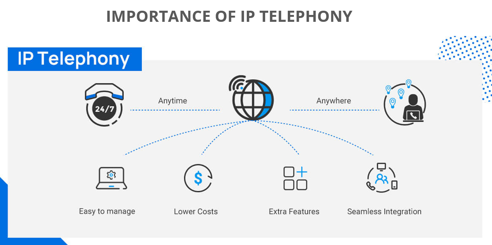

Project Details
Overview: This project focuses on designing a robust and scalable VoIP (Voice over Internet Protocol) system network. It integrates modern networking technologies to provide seamless IP telephony solutions with high reliability and performance.
Goals: To create a reliable, scalable, and secure IP telephony infrastructure that supports efficient communication between multiple devices.
Technologies: Cisco Packet Tracer, VLANs, subnetting, DHCP server, OSPF routing protocol, and secure SSH configurations.
Tools & Technologies:
- Simulation Tool: Cisco Packet Tracer
- Networking Concepts: VLAN, subnetting, DHCP, SSH, OSPF
- Key Features: VoIP configuration, secure system setup, network diagrams.
VoIP
VoIP IP Telephony System
Network Diagrams & Configuration Screenshots
Summary
The VoIP - IP Telephony System Network Design project highlights the use of VLANs, dynamic IP addressing, secure remote access, and optimized routing protocols to deliver high-quality telephony services. The project demonstrates the scalability and flexibility of modern VoIP solutions and provides a blueprint for future enhancements such as cloud-based management and real-time monitoring.